Contenido del manual
Contenido
Los roles del sistema
Cada persona entra con su propia cuenta y ve solo lo que le corresponde. Como administrador, tú decides quién tiene cada rol.
| Rol | Quién es | Qué hace |
|---|---|---|
| Administrador | Dirección de la fundación | Ve los indicadores y administra usuarios, servicios, la agenda general y los datos bancarios. |
| Secretario | Personal administrativo | Aprueba pagos, agenda y cancela citas, registra pacientes y profesionales. |
| Profesional | Terapeutas y psicólogos | Publica sus horarios, marca asistencia y sube los reportes de sesión. |
| Cliente | Familias y pacientes | Agenda y paga sus citas, descarga recibos y lee sus reportes. |
Cada rol tiene su propio manual. Puedes compartirlos con tu equipo desde la portada de los manuales.
Las personas y cifras de las imágenes son ejemplos creados para este manual.
Ingresar y la Vista General
Entra en aspy-web.vercel.app → Ingresar con tu correo y contraseña de administrador.
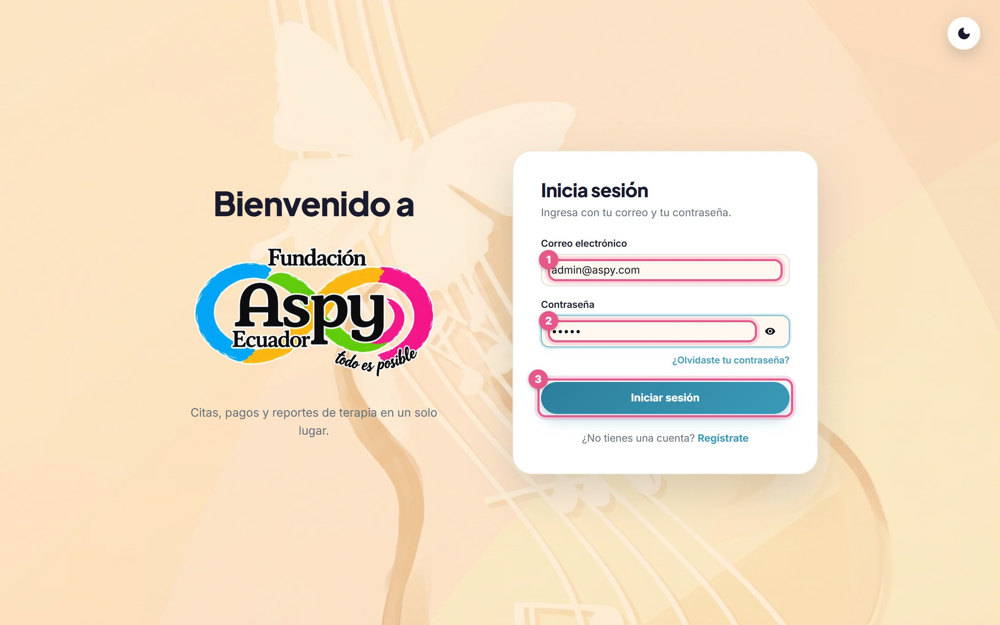
Tus indicadores
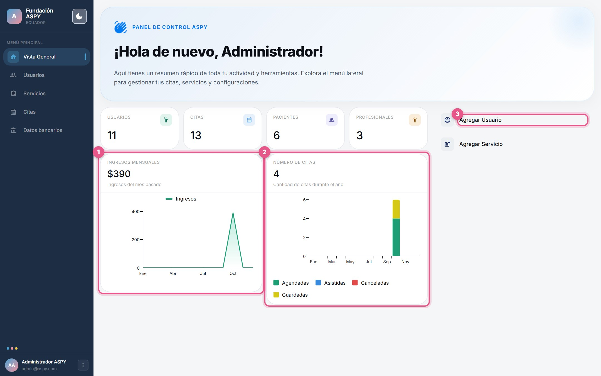
- Arriba: el total de usuarios, citas, pacientes y profesionales.
- 1 Ingresos mensuales: lo cobrado en el mes, con una gráfica del año.
- 2 Número de citas: citas por mes, separadas por estado (agendadas, asistidas, canceladas, guardadas).
- 3 Accesos rápidos: Agregar Usuario y Agregar Servicio.
En el menú de la izquierda tienes: Usuarios, Servicios, Citas y Datos bancarios.
Usuarios
Aquí están todas las cuentas del sistema: administración, secretaría, profesionales y pacientes.
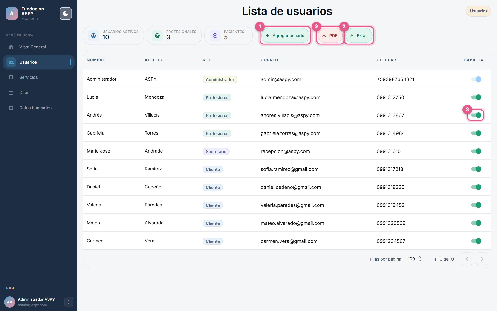
- 1 Agregar usuario: crea una cuenta nueva.
- 2 PDF / Excel: descarga la lista completa.
- 3 Habilitado: activa o desactiva una cuenta. Una cuenta desactivada no puede iniciar sesión: verá el aviso “Tu cuenta está deshabilitada. Comunícate con el administrador de la fundación”. Si tenía la sesión abierta, el sistema la cierra en menos de un minuto (o en cuanto haga algo). Tu propio interruptor aparece bloqueado: nadie puede deshabilitar su propia cuenta. Si junto al interruptor aparece un escudo rojo, esa persona retiró su consentimiento desde ⋮ → Privacidad y mis datos (al pasar el mouse dice la fecha) y su cuenta se deshabilitó sola: la fundación tiene 15 días para atender el pedido y eliminar los datos que la ley no obligue a conservar. No la vuelvas a habilitar sin hablar con la persona; si la habilitas, el sistema le pedirá aceptar la política de nuevo.
- La columna Rol muestra el tipo de cada cuenta con un color.
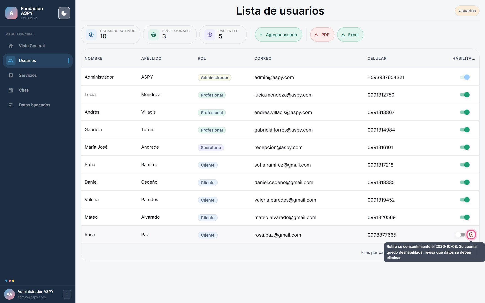
Ver y editar una cuenta
Haz clic en una fila para ver la ficha completa a la derecha. Con el lápiz abres el formulario de edición.
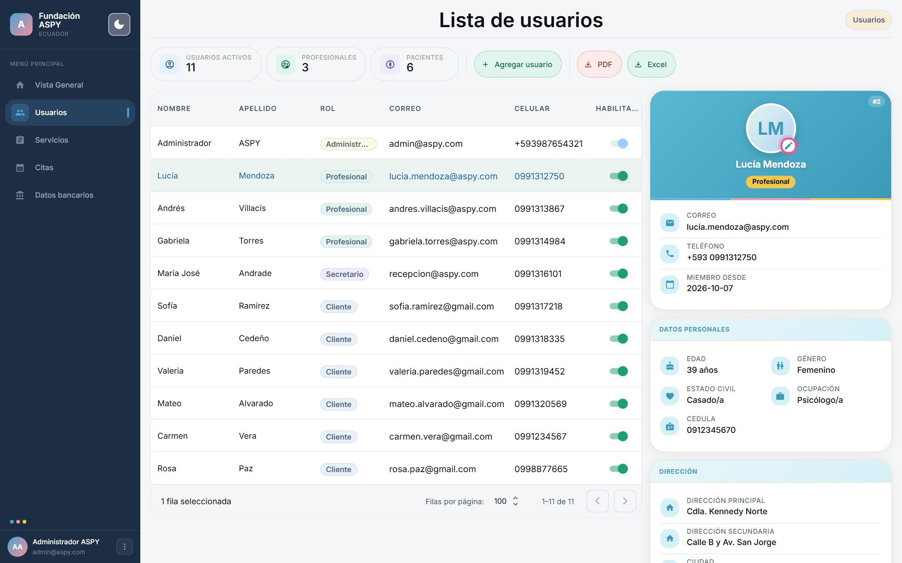
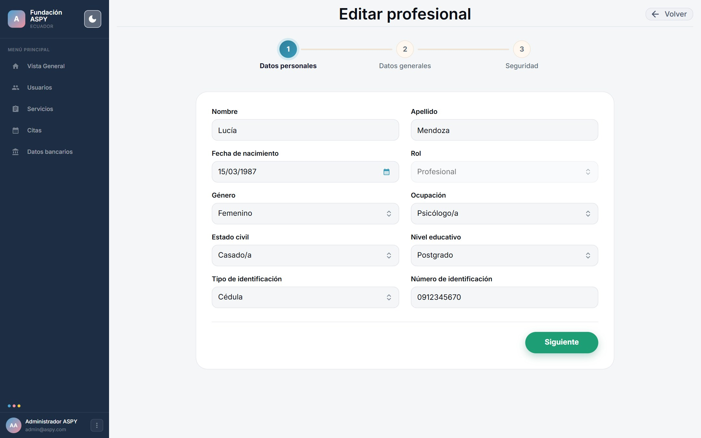
Crear una cuenta nueva
- Presiona “Agregar usuario”
Completa los datos personales y elige el Rol: Profesional, Cliente o Secretario.
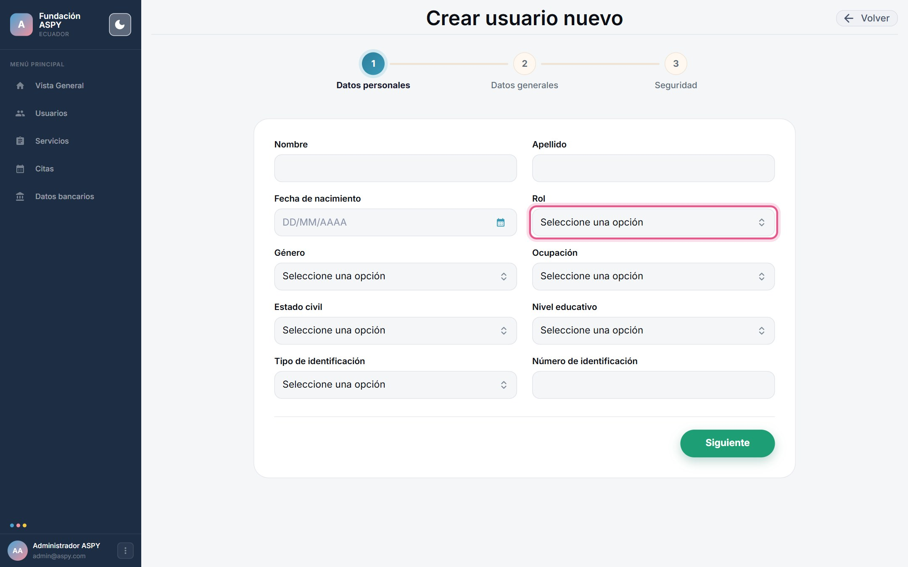
- Completa contacto y dirección
Teléfono, provincia, ciudad y dirección. A los profesionales se les pide además título y especialidad.
- Define el acceso
Escribe el correo y una contraseña inicial (mínimo 8 caracteres) y guarda. Si el correo ya tiene una cuenta o algún dato no es válido, aparece un aviso en rojo arriba del formulario.
- La persona acepta la política al entrar
Nadie puede aceptar la Política de Privacidad por otra persona: la primera vez que la persona entre con su cuenta (sea paciente, profesional, secretaría o administración), el sistema se la muestra y debe leerla, marcar las casillas de su consentimiento y aceptarla para continuar. Se pide una sola vez por cuenta, y de nuevo solo si la política cambia. Si la cuenta es de una persona menor de 15 años, lo hace su madre, su padre o su representante legal (el sistema pide su nombre y su identificación).
- Entrega los datos
Comparte el correo y la contraseña con la persona de forma privada y pídele que la cambie desde su perfil.
Por seguridad, desde esta pantalla no se crean otros administradores y nadie puede cambiar su propio rol. Si necesitas otra cuenta de administración, pídela a los desarrolladores.
Cuando alguien deja la fundación, deshabilita su cuenta en lugar de eliminarla: se conserva su historial y deja de tener acceso.
Servicios
Los servicios que ofrece la fundación, con su precio y el profesional que los atiende.
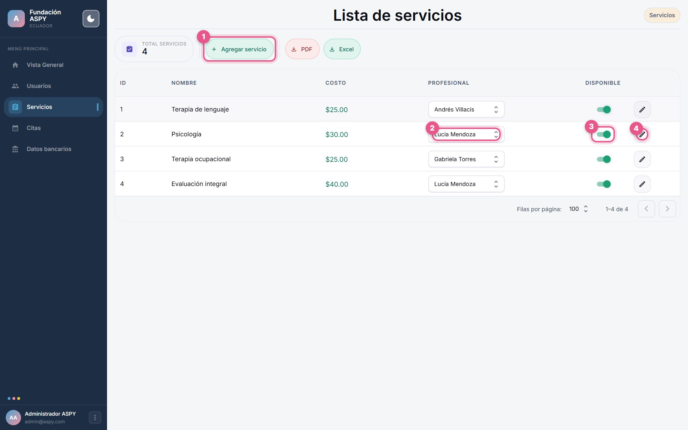
- 1 Agregar servicio: nombre y precio en dólares.
- 2 Profesional: elige quién atiende el servicio; el cambio se guarda solo.
- 3 Disponible: apágalo para que el servicio deje de ofrecerse al agendar.
- 4 Lápiz: cambia el nombre o el precio.
- PDF / Excel: descarga la lista.
Puedes cambiar un precio cuando haga falta: cada pago guarda el monto que se cobró, así que los recibos y los ingresos anteriores no cambian.
Datos bancarios
Es la cuenta a la que las familias transfieren el pago de sus citas. Solo tú (administración) puedes cambiarla; pacientes y secretaría la ven en la pantalla de pago.
- Abre “Datos bancarios”
En el menú de la izquierda 1.
- Completa la cuenta
Banco, tipo de cuenta (corriente o de ahorros), número de cuenta, titular y la cédula o RUC del titular. Presiona Guardar 2.
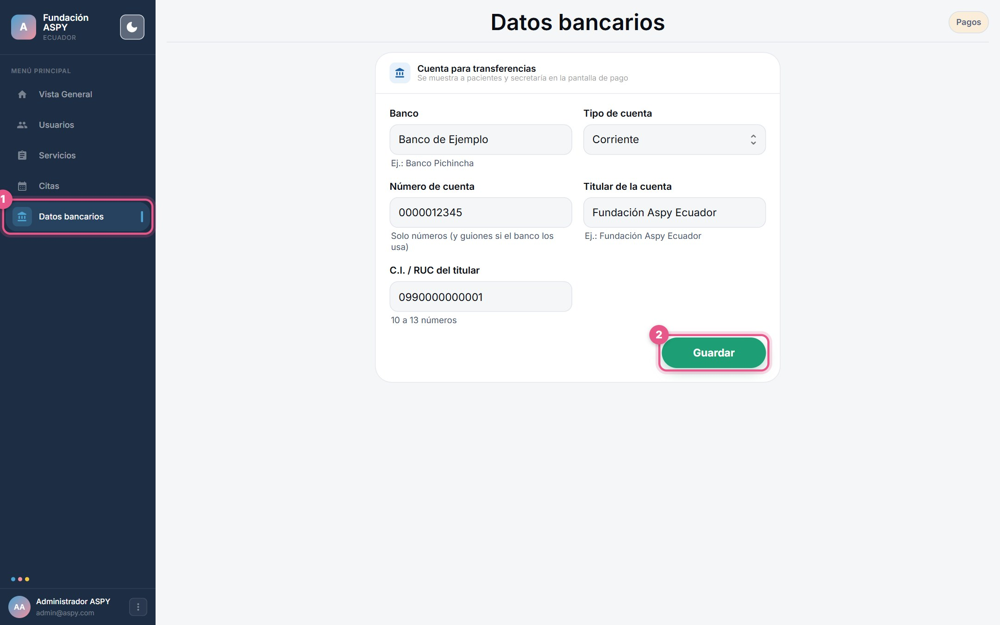
Los datos de la imagen son de ejemplo.
Mientras no haya datos bancarios guardados, nadie puede pagar una cita en línea: la pantalla de pago muestra un aviso para comunicarse con la fundación.
Revisa dos veces el número de cuenta: es a donde llegará el dinero de las familias.
La agenda general
En Citas ves el calendario de toda la fundación. Con la lista Profesionales puedes ver la agenda de una sola persona.
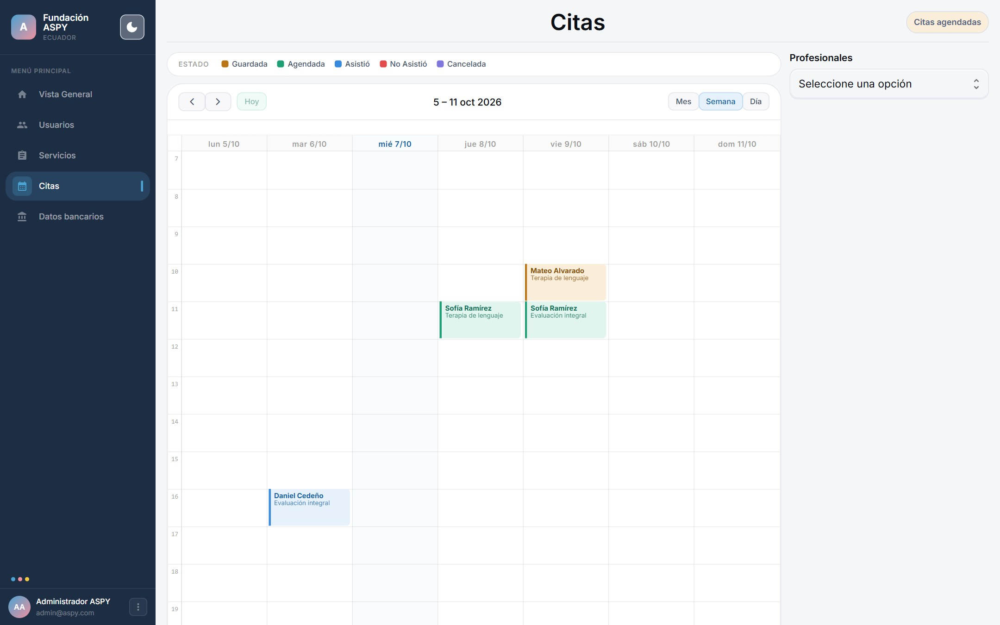
Con Mes tienes una vista general para planificar:
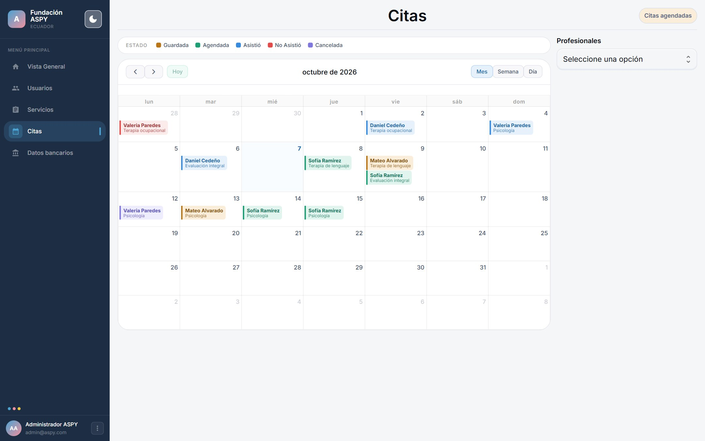
La aprobación de pagos y la cancelación de citas las hace secretaría desde su cuenta (ver el manual del personal administrativo).
Seguridad y buenas prácticas
El sistema guarda datos sensibles de salud. Estas costumbres ayudan a protegerlos.
- Una cuenta por persona. Nunca compartas tu usuario de administrador.
- Contraseñas largas (más de 8 caracteres) y distintas a las de otros servicios.
- Revisa la lista de usuarios cada mes y deshabilita a quien ya no colabore con la fundación.
- El sistema se protege solo de los abusos: limita los intentos de ingreso, las cuentas nuevas por conexión, las subidas de archivos y la cantidad de acciones por minuto. Si alguien ve el mensaje “Demasiadas solicitudes seguidas”, basta con esperar un minuto.
- Cierra sesión en computadoras compartidas: botón ⋮ → Cerrar sesión.
- Las listas exportadas a PDF o Excel contienen datos personales: guárdalas en un lugar seguro y no las reenvíes.
- Las sesiones se cierran solas después de 7 días; el sistema también bloquea por un minuto los intentos repetidos de contraseña incorrecta.
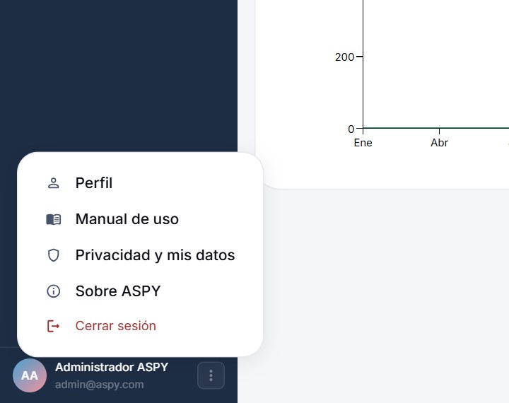
Este manual dentro del sistema
En ⋮ → Manual de uso ves todos los manuales, cada uno en su pestaña. La secretaría también ve todos; los pacientes y los profesionales solo ven el suyo.
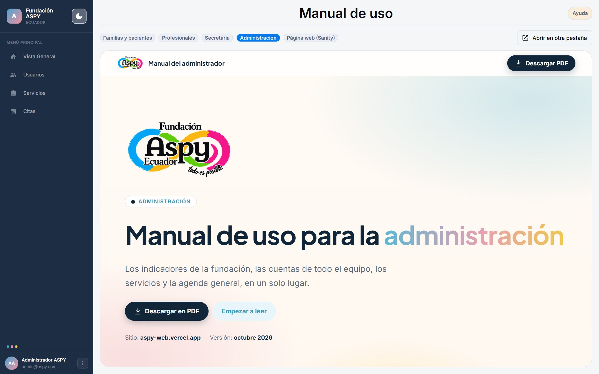
Contenido de la página web
Los textos, fotos, contactos y redes de la página pública se editan en Sanity, no en este sistema. Revisa el manual para editar la página web.